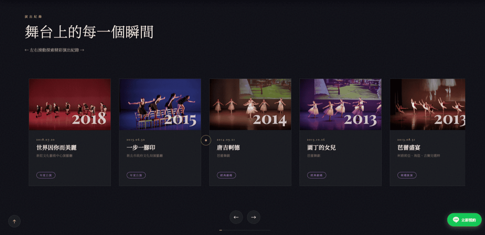
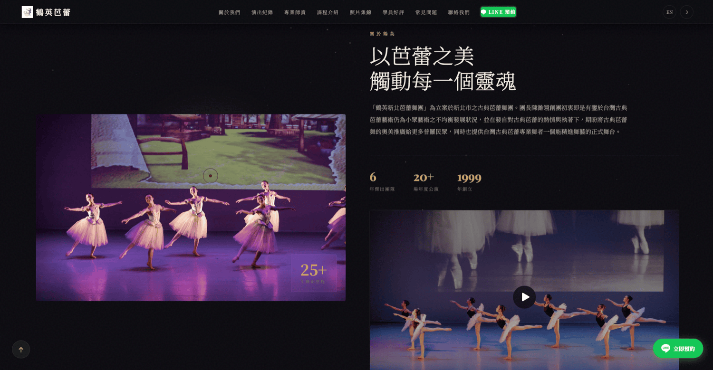
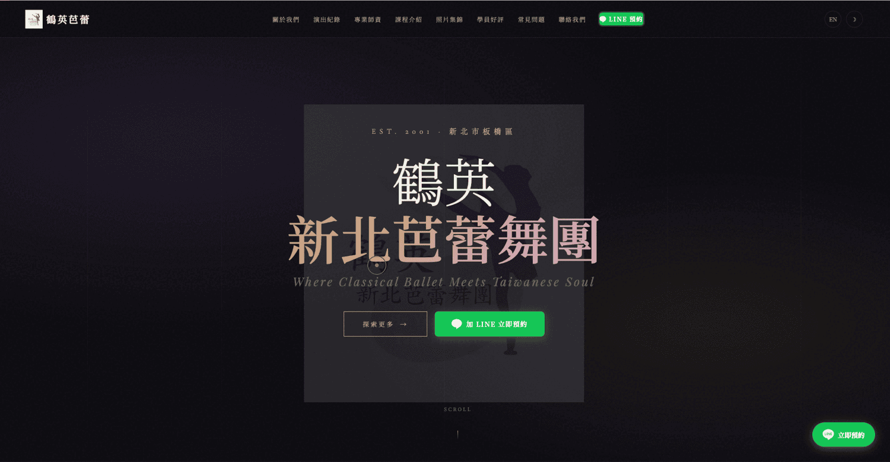

為鶴英品牌從零打造具視覺識別的官方網站，涵蓋品牌形象呈現、RWD 響應式設計與清楚的行動呼籲，讓潛在客戶能快速找到品牌並產生轉換。



鶴英是一個需要對外建立品牌形象的客戶，在與我接洽時完全沒有任何官網或線上展示頁面。潛在合作方或客戶無法透過搜尋引擎或網路找到任何品牌資訊，缺乏可信任的第一印象來源。
我的任務是從零開始——包含理解品牌定位、規劃網站架構、設計視覺風格，以及確保在不同裝置上的使用體驗，最終交出一個能實際上線、維護門檻低、能直接用的品牌官網。
為鶴英品牌建立專業對外展示窗口，提升品牌可信度，降低潛在客戶與品牌接觸的門檻。 網站上線後，客戶有了可直接分享的品牌連結，不再需要用通訊軟體截圖或文字介紹來說明自己是誰。 整站 RWD 完整，在手機與桌面均正常顯示，維護門檻低，客戶可自行更新文字內容。